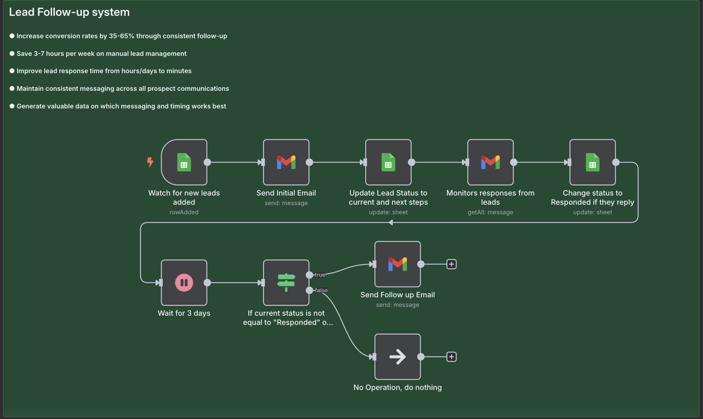

Back to Projects
Back to Projects
n8n
Automated Lead Follow-up System
This automated Lead Follow-Up System is a flexible automation template designed to handle one of the most critical aspects of business: consistent and timely follow-up with your potential customers!

What's the problem?
- It takes too much time to keep track of new potential customers (leads)
- Sometimes we're slow to reply to them
- This means we might miss out on sales
My Solution:
I built an automatic system to talk to new leads. It makes sure we respond fast and always send the right message. This saves time and helps us get more customers!
How it Helps (The Good Stuff):
- More Sales: Helps us turn 35-65% more leads into customers by talking to them regularly
- Saves Time: Frees up 3-7 hours each week that used to be spent manually dealing with leads
- Fast Replies: We reply to leads in minutes, not hours or days
- Clear Messages: All our messages to potential customers are consistent and clear
- Learn What Works: It shows us which messages and timing work best, so we can keep getting better
How it Works (Step-by-Step):
- New Lead Appears: When a new lead is added (like in a spreadsheet), the system instantly notices
- First Email: It immediately sends a welcome email to the new lead
- Update Status: The system marks the lead's status to show they've received the first email
- Watches for Replies: It keeps an eye out for any emails back from the lead
- Status Changes: If the lead replies, their status is changed to "Responded" right away
- Smart Follow-Up:
- The system waits for 3 days
- After 3 days, it checks if the lead has replied
- If they HAVEN'T replied: It sends a follow-up email
- If they HAVE replied: It does nothing, because a person can take over from there